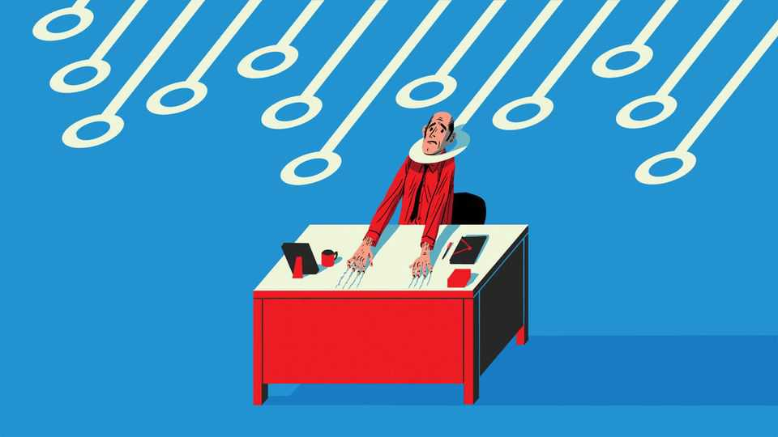

If AI displaces human workers, they will lose more than just pay
Work has value beyond the income it provides

Oct 22nd 2026
Sometimes you embark on a project and realise that you have misjudged things. To your horror you realise it’s too late to turn back. So you plough on and hope to avoid catastrophe. But enough about Mark Zuckerberg drinking Guinness. Other artificial-intelligence bigwigs harbour deep misgivings of another kind—about the potential effects of the technology they are developing. On October 18th Anthropic, an AI lab, said it plans to put 5% of its shares into a public-benefit fund that might end up distributing cash to people affected by economic upheaval. A day later Elon Musk pledged to give one share in SpaceX to every child in America.
There is no sign yet of an AI jobs apocalypse. But if the technology were to destroy many more jobs than it creates, the question of how much paid employment matters, not just to people’s income but also to their happiness and dignity, would become salient indeed.
There are Pollyanna-ish answers to this question. Some point out that history is full of societies that were not organised around paid work. Survey data show that most retired Americans report being satisfied with their lives. Solve the piddling problem of how to fund a life without work, in other words, and everyone could merrily spend their days growing prize-winning tomatoes or going on river cruises.
The truth, inevitably, is a lot more complicated. A review of the academic literature on well-being and work, published last month by Stephanie Chan and other researchers from Google DeepMind, another AI lab, is a helpful reminder that paid employment provides benefits that go well beyond income, and that the path to a good outcome in the event of real economic upheaval would be a narrow one.
Consider what work provides. Marie Jahoda, an influential academic, identified five latent benefits of employment: the structure it imposes on people’s days; the social contact it entails; the sense of collective purpose; the status afforded by being in work; and the nudge it gives away from idleness and towards activity. (There are others, too: a recent paper by Noah Kouchekinia of the University of California, Irvine, and his co-authors found evidence that cognitive decline accelerates among adults who leave the workforce before retirement age.)
Even people with plenty of options seem to be wary of a life of leisure. There aren’t that many Silicon Valley billionaires who pack it all in to focus on their hobbies. In a similar vein, a paper by Bengt Furaker and Anna Davidsson of the University of Gothenburg looked at how lottery winners in Sweden responded to their good fortunes. A larger windfall did make it more likely that winners would take a chunk of unpaid leave and reduce their working hours, but only a small share of them quit work entirely.
Some jobs are much less enjoyable than others, of course. And it is possible to derive latent benefits elsewhere, from caregiving, say, or being a stay-at-home parent. A paper by Michelle Jongenelis of the University of Melbourne and her co-authors looked at the effects of volunteering on the well-being of Australian retirees. Even a very small amount—as little as an hour a week—yielded notable improvements in scores for life satisfaction and purpose.
But this is cold comfort for people who want and expect to work. In another paper, Clemens Hetschko of the University of Leeds and his co-authors traced German adults’ self-reported well-being as they entered retirement. Life satisfaction for employed people did not change much after they left the workforce. But people who had been long-term unemployed when they hit retirement age reported a big jump in well-being.
On the face of it, this seems odd. The people who had been in work would almost certainly have experienced greater upheaval to their daily routines and incomes. The authors’ theory is that unemployed people have switched social categories, from an unwanted one when they are of working age to a respectable one when they reach retirement age.
In other words, anyone who blithely says that people can substitute other activities for paid employment is wishing away the evidence. Some jobs are dismal. But at the moment nothing else brings the same bundle of psychological and monetary benefits in such a socially acceptable form. Making sure people have enough money to live on if AI takes away their jobs is a big problem. Giving them a sense of self-worth would be just as difficult. ■